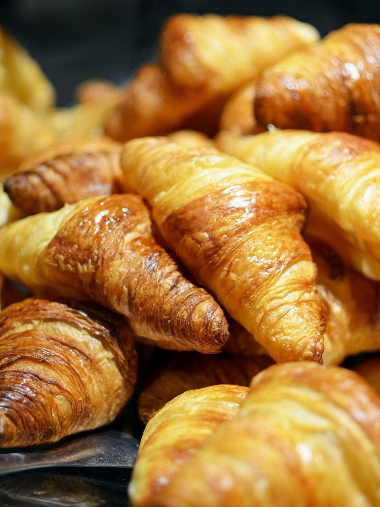

and
BON
andBON(アンドボン)
長野県上田市にあるカフェ・ベーカリー「andBON」のご案内ページです。営業時間やメニューなど詳しいことは準備中。まずはInstagramをのぞいてみてください。
制作側の連想です。お店の理念・由来とは無関係で、屋号の由来は分かりません。制作側は、屋号の「and」が小文字、「BON」が大文字という表記の並びから、このサイトを「小文字3つと大文字3つ」の作りにしました。小文字側は確認できたこと、大文字側はこれから確認すること、と割り振っています。
and と BON、ひと組ずつ
小さな字と、大きな字。
写真は、お店や上田市のものではありません。左(淡い面)と右(濃い面)で色味の違うフリー素材を、ひと組ずつ並べた見本です。国外・撮影地不明の写真です。
pair 01


pair 02


pair 03


ご案内
お店のこと(確認できたものだけ)
| 所在地 | 〒386-0012 長野県上田市中央6丁目11-19 |
|---|---|
| 電話 | なし |
| 営業時間 | 準備中 |
| 定休日 | 準備中 |
| ご予約 | 準備中 |
| 駐車場 | 準備中 |
| SNS | Instagram @andbon_nagano |